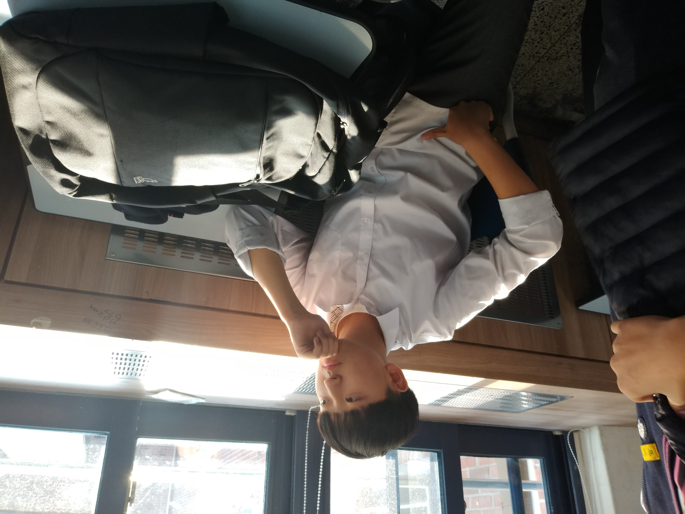
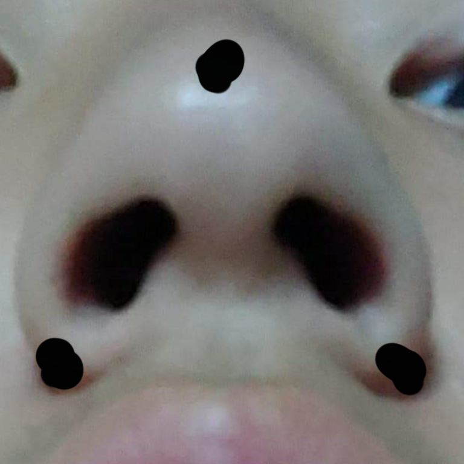

삼각형에는 오심이 있다. 내심 외심 수심 방심 무게중심 그중 우리는 무게중심에 대하여 알아볼 것이다혹시 사각형의 무게중심이 궁금한 사람은 이 링크를 눌러 확인해도 좋다.'
삼각형의 무게중심이란 무었인가?
이름 그대로 물체의 무게의 중심점.
학교에서는 삼각형의 무게중심에 대해 배우며,
삼각형의 무게중심의 정의는 세 중선의 교점이다.
필요한 도구,머리 눈
모든 준비물을 챙겼다면 이제 시작하도록 하자. 무게중심이란 삼각형의 중선의 교점이다. 그렇다면 여기서 의문점이 하나 생긴다. 중선이란 무엇일까? 중선이란, 삼각형에서 한 꼭짓점과 마주보는 변의 중점을 이은 선을 말한다.
제한이코의 무게중심찾기
이렇제 잘생긴 제한이의 얼굴을보면 당신은 무었을 하고 싶은가?

나는 제한이의 코에서 무게중심을 찾고 싶다. 자 그러면 찾아보자.
자 여기에 제한이의 코가 있다. 주리는 아까 배웠던 대로 중선을 찾아 연결하며 제한이 코의 무게중심을 찾을 것 이다.
일단 제한이코가 완벽한 삼각형이 아니니 완벽한 삼각형을 만들어 주었다.아까 우리는 삼각형의 세 중선을 이으면 삼각형의 무롖중심이 나온다 라는 사실을 배웠으니 그대로 해보자.
1.먼저 제한이의 코에 세 꼭짓점을 찍어 보았다.

2.그 뒤 세점을 이어 완벽한 삼각형으로 만들었다.
3.삼각형의 세 꼭짓점에서 그 점의 대변의 중심에 위치한 선으로 직선을 그려
중선 3개의 교점을 찾아냈다.
그려보니 세점이 제한이의 콧구멍사이의 한 점에서 만난다.그렇다 바로 이점이 삼각형의 무계중심 인것이다.
자 그러면 이점에는 어떠한 특징이 있을까?
특징
1. 모든선을 그었을때 세 선분다 2:1의 비율로 나누어 진다.2. 무계중심은 단 1개만 존재한다.
3. 세중선에 의해 나누어진 6개의 삼각형은 모두 넓이가 같다.
증명
--------------------------------------------------->
21017